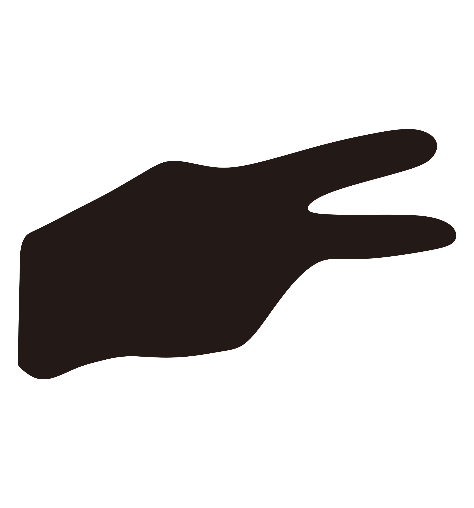
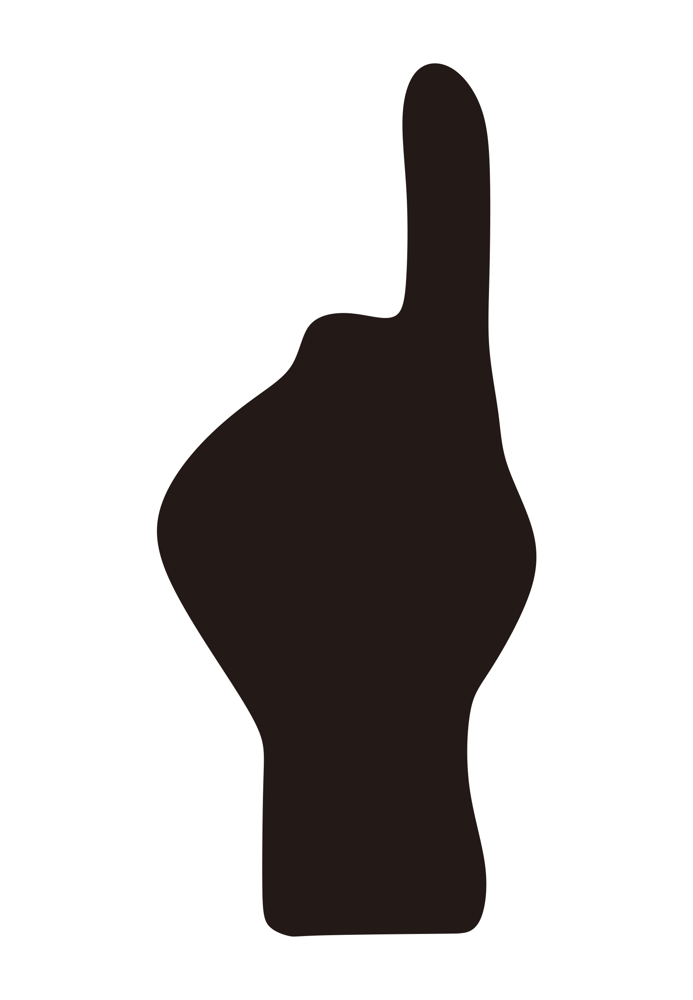
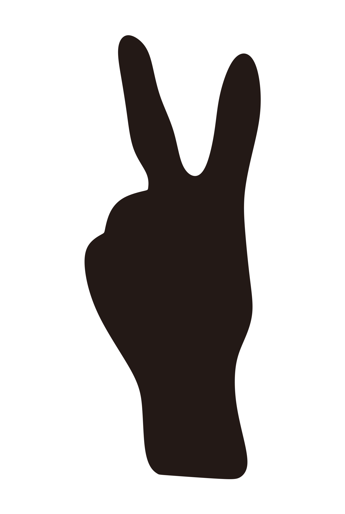

PROSES VERIFIKASI
TIPE REVIEW
SUDUT
JURI 1
-
JURI 2
-
JURI 3
-
❮
PORTAL MONITOR TV (TANDING)
Pilih Gelanggang TV:
-- Pilih Gelanggang --
Gelanggang 1
Gelanggang 2
Gelanggang 3
Gelanggang 4
Gelanggang 5
Gelanggang 6
Gelanggang 7
TAYANGKAN KE MONITOR
KEJUARAAN PENCAK SILAT
SUDUT BIRU
KONTINGEN
00:00
SUDUT MERAH
KONTINGEN
G?
RONDE 1
PARTAI
BABAK



0
0
HASIL PERTANDINGAN
SUDUT BIRU MENANG
W.M.P
PESILAT BIRU
VS
PESILAT MERAH
0
SKOR
0